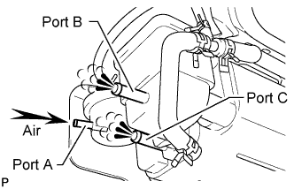
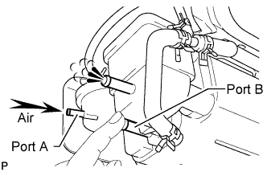

CANISTER > INSPECTION |
| 1. INSPECT CANISTER |
 |
Visually check the canister for cracks or damage.
Blow compressed air of 4.9 kPa (50 gf/cm2, 0.71 psi) into port A and check that air flows without resistance from port B and port C.
If the result is not as specified, replace the canister.
Apply a vacuum of 1.96 kPa (20 gf/cm2, 0.28 psi) to port A. Check that the vacuum does not decrease when ports B and C are closed, and check that the vacuum does not decrease when port B is released.
If the result is not as specified, replace the canister.
| 2. CLEAN FILTER IN CANISTER |
 |
Clean the filter by blowing compressed air of 4.9 kPa (50 gf/cm2, 0.71 psi) into port A while holding port B closed.